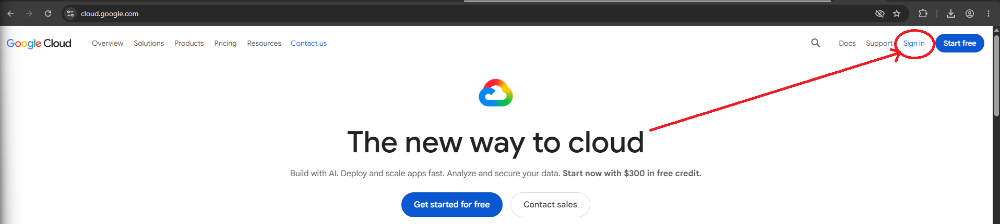
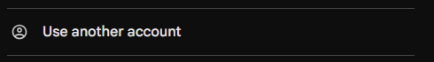
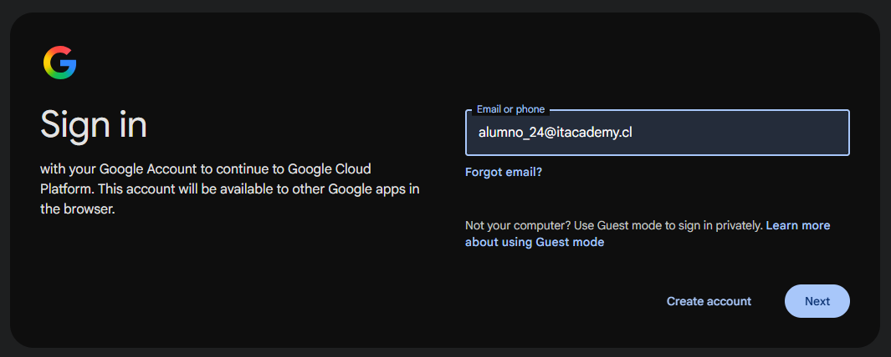
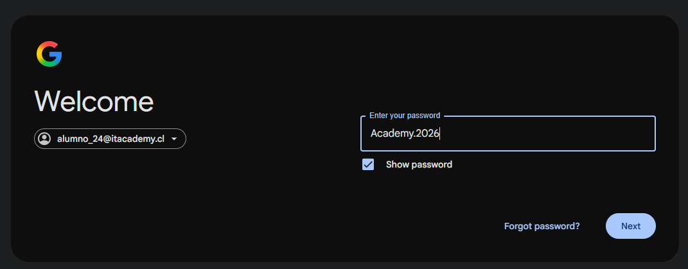
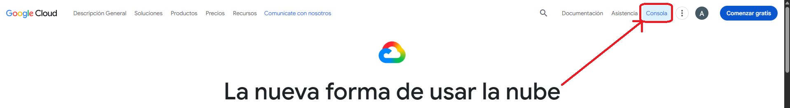
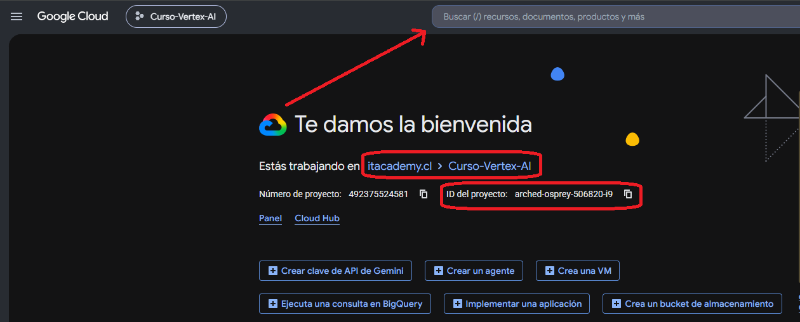
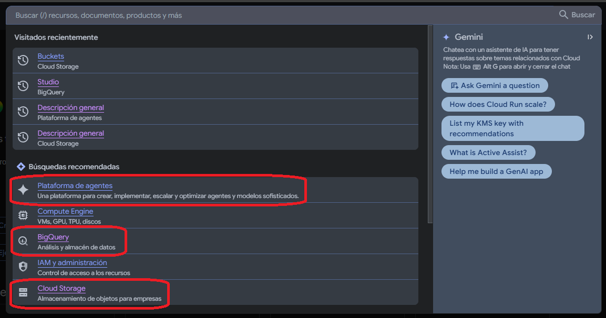

Orientarse en Google Cloud Console
Antes de trabajar con Cloud Storage, BigQuery o Agent Studio, necesitas reconocer tres cosas: en qué proyecto estás, cómo encontrar un servicio y cómo volver a ubicar un recurso después.
Acceso a Google Cloud
Antes de comenzar, inicia sesión con la cuenta de alumno asignada para el curso.
Abre https://cloud.google.com/ y selecciona Sign in / Iniciar sesión en la esquina superior derecha. No uses Start free / Comenzar gratis.
- Abre cloud.google.com.
- Haz clic en Sign in / Iniciar sesión, arriba a la derecha. No selecciones Start free / Comenzar gratis.
- Si Google muestra una cuenta distinta, elige Usar otra cuenta.
- Escribe alumno_XX@itacademy.cl con tu número asignado y pulsa Siguiente.
- Escribe Academy.2026 y pulsa Siguiente.
- Si vuelves a la página pública de Google Cloud después de iniciar sesión, haz clic en Consola / Console, arriba a la derecha.
- Si aparece el aviso de Chrome o de verificación en dos pasos, usa la opción para posponerlo y continúa.
- Ya dentro de la consola, confirma que estás en el proyecto del curso antes de seguir.





1. ¿Qué es Google Cloud Console?
Google Cloud Console es la interfaz web desde la que puedes acceder a productos y recursos de Google Cloud. En el curso la usaremos principalmente para movernos entre servicios, revisar recursos ya preparados y ejecutar tareas guiadas.

2. Verifica el proyecto activo
Un proyecto es una unidad organizativa fundamental en Google Cloud: agrupa recursos y actúa como contexto para muchos servicios. Por eso, antes de crear, abrir o consultar algo, conviene comprobar qué proyecto está seleccionado.
Proyecto del curso
Nombre: Curso-Vertex-AI
Project ID: arched-osprey-506820-i9
Qué revisar
En la parte superior de la consola, abre el selector de proyectos y confirma que estás trabajando en el proyecto indicado para la actividad.
3. Nombre del proyecto vs Project ID
Google Cloud puede mostrar varios identificadores de un proyecto. Para el trabajo técnico, el Project ID es especialmente importante porque aparece en rutas, nombres completos de tablas y referencias a recursos.
| Elemento | Ejemplo del curso | Para qué sirve |
|---|---|---|
| Nombre del proyecto | Curso-Vertex-AI | Nombre legible que ayuda a reconocer el proyecto. |
| Project ID | arched-osprey-506820-i9 | Identificador técnico usado en referencias y recursos. |
| Project number | Valor numérico administrado por Google Cloud | Identificador numérico utilizado por algunos servicios y APIs. |
En BigQuery, por ejemplo, una tabla completa se referencia con la forma PROYECTO.DATASET.TABLA. Por eso verás el Project ID repetido a lo largo del curso.
4. La forma más rápida de encontrar un servicio: buscarlo
La barra superior de búsqueda de Google Cloud permite localizar productos, páginas y recursos. Para un usuario que todavía está aprendiendo la consola, suele ser más práctico buscar el nombre del servicio que memorizar su ubicación dentro de los menús.
- Haz clic en la barra de búsqueda superior.
- Escribe el nombre del servicio, por ejemplo Cloud Storage o BigQuery.
- Revisa el resultado y entra al producto correspondiente.
- Una vez dentro, vuelve a verificar que el contexto del proyecto sea el correcto.

6. Moverse entre los servicios del curso
Durante el sitio aparecerán principalmente estos destinos. No necesitas mantener varias pestañas abiertas: puedes volver al buscador superior cuando quieras cambiar de servicio.
| Servicio | Qué haremos ahí | Qué conviene reconocer |
|---|---|---|
| Cloud Storage | Trabajar con buckets y archivos/objetos. | Bucket, ruta, objeto y URI gs://. |
| BigQuery | Explorar tablas y ejecutar GoogleSQL. | Proyecto, dataset, tabla, esquema y resultados. |
| Gemini / superficies de IA | Trabajar con lenguaje natural y documentos. | Fuente utilizada, prompt y resultado. |
| Agent Studio | Probar el agente y observar herramientas. | Instructions, Knowledge, Tools y Preview. |
7. Regiones y ubicaciones: lo básico
Algunos recursos de Google Cloud tienen una ubicación asociada. Dependiendo del servicio, puede tratarse de una región, una multirregión u otro tipo de ubicación. La ubicación puede afectar compatibilidad, residencia de datos, latencia y diseño.
Para este curso no necesitas aprender arquitectura regional en profundidad. Sí necesitas adquirir el hábito de mirar la ubicación antes de crear o relacionar recursos.
Ejemplo de región
us-central1
Qué debes hacer
Usar la ubicación indicada por la actividad y no cambiarla “por probar” cuando trabajes con recursos compartidos.

8. Permisos: ver un recurso no significa poder modificarlo
La consola puede mostrar mensajes sobre permisos o APIs aun cuando el recurso del curso esté disponible y la operación funcione. Si el relator indicó seguir y la acción se puede completar, continúa normalmente.
No intentes corregir esos avisos cambiando IAM, roles, políticas o habilitando APIs por tu cuenta. Si aparece un error que efectivamente impide ejecutar la acción, ahí sí detente y consulta al relator.
Google Cloud utiliza Identity and Access Management (IAM) para determinar qué acciones puede realizar cada identidad. Un usuario puede tener permiso para consultar un recurso y no para crearlo, modificarlo o eliminarlo.
La documentación de Google señala que los errores de permisos pueden aparecer, entre otras razones, cuando faltan los permisos requeridos o una política impide el acceso. Para el alumno, lo importante es reconocer que un error de acceso no se soluciona alterando la seguridad del proyecto por cuenta propia.
9. Recorrido rápido antes de cada actividad
- Abre Google Cloud Console.
- Confirma el proyecto arched-osprey-506820-i9.
- Busca el servicio que necesitas.
- Entra al servicio y localiza el recurso indicado.
- Antes de modificar algo, confirma nombre, ruta, ubicación y alcance de tus permisos.
- Google Cloud Resource Manager — View and update projects
- Google Cloud — Keyboard shortcuts for Google Cloud
- Google Cloud IAM — Permission error messages
- Google Cloud — Products and services
La secuencia pedagógica también sigue el alcance visto en las guías del curso: navegar la consola, reconocer el proyecto, trabajar dentro de recursos autorizados y no modificar IAM ante errores de acceso.